Alle 25 Bilder stammen von vor dem 2026-10-16 — dem Tag, an dem HATS zu Glaswerk wurde (Commit bb09026). Das Datum allein sagt aber nichts: Nur ein Teil zeigt den alten Namen wirklich im Bild.
bb09026
Durchgesehen: 3 zeigen „HATS“ und müssen neu — glaswerk-dunkel.jpg, glaswerk-hell.jpg, vergleich-3-mit-uix.jpg. 2 sind geprüft und sauber. 20 sind noch nicht angesehen.
glaswerk-dunkel.jpg
glaswerk-hell.jpg
vergleich-3-mit-uix.jpg
Die Durchsicht steht in werkzeuge/bilduebersicht.mjs unter GEPRUEFT — wer ein Bild ansieht, trägt das Ergebnis dort ein, damit es nicht zweimal geöffnet wird.
werkzeuge/bilduebersicht.mjs
GEPRUEFT
Was im README steht - die Bilder, die ein Besucher auf GitHub sieht.
docs/bilder/
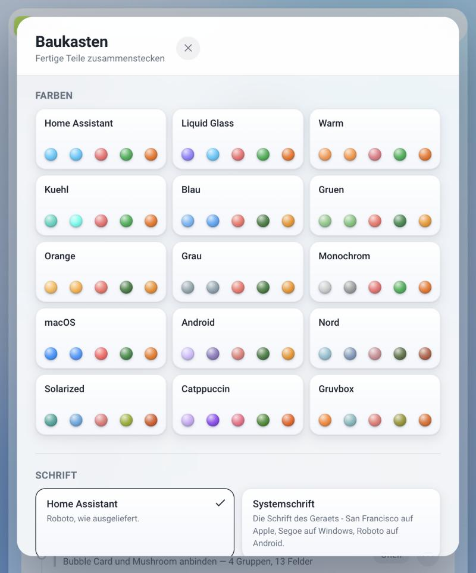
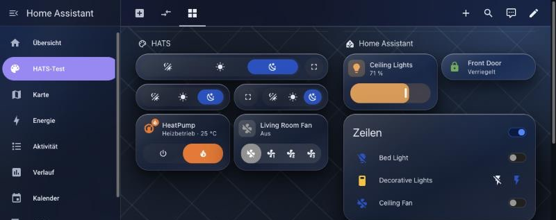
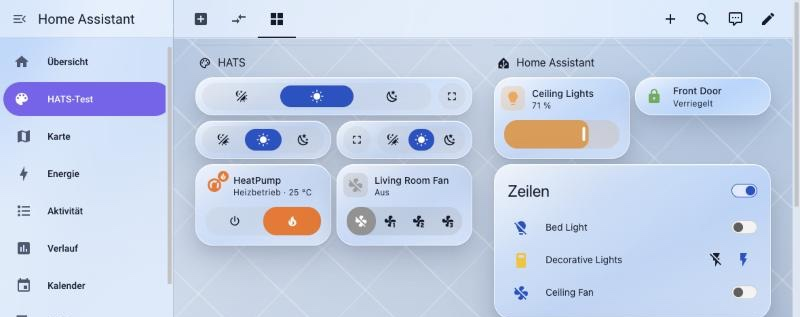
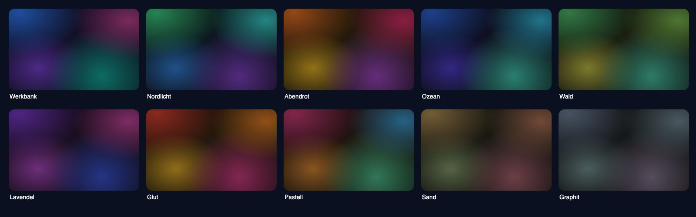
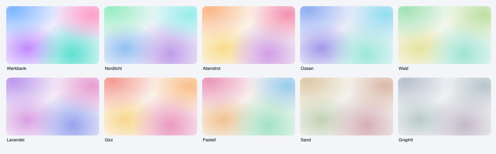
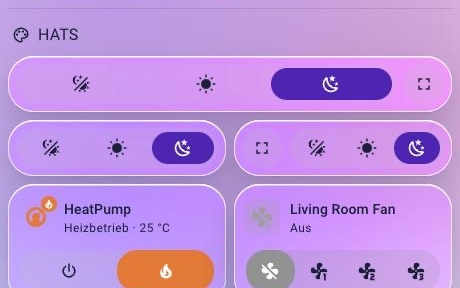
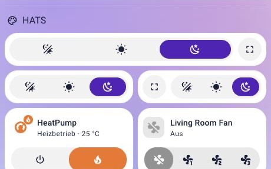
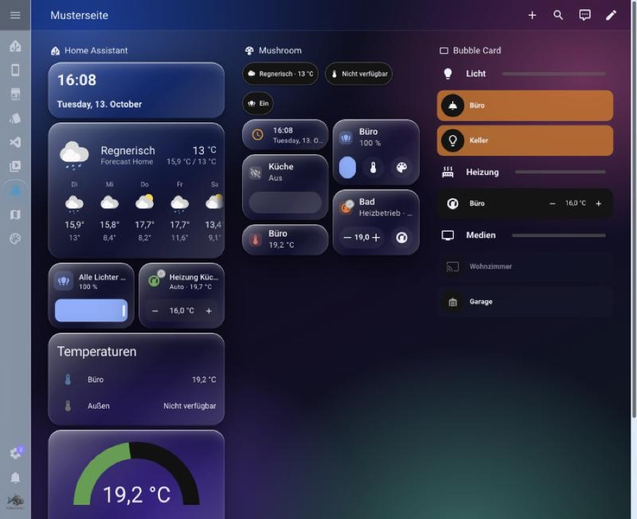
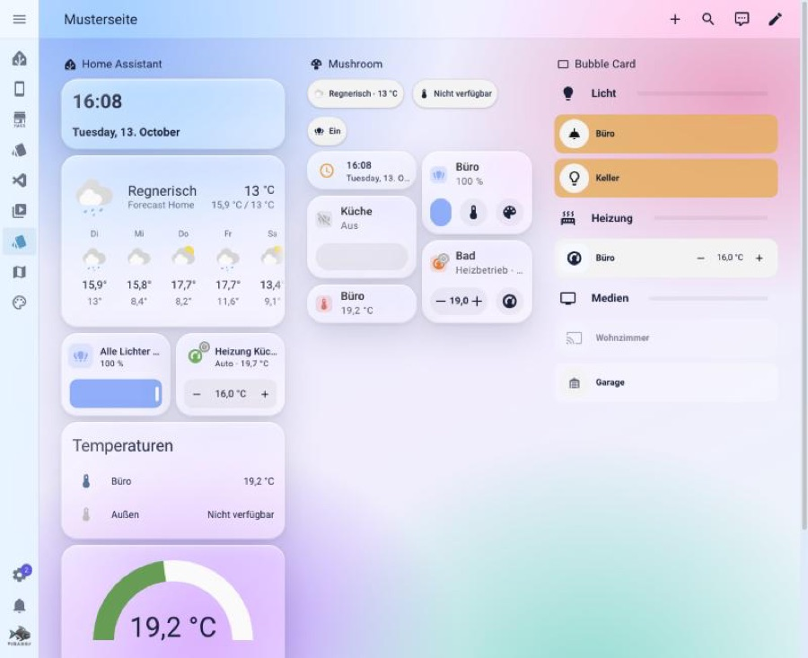
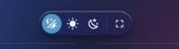
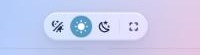
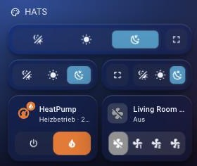
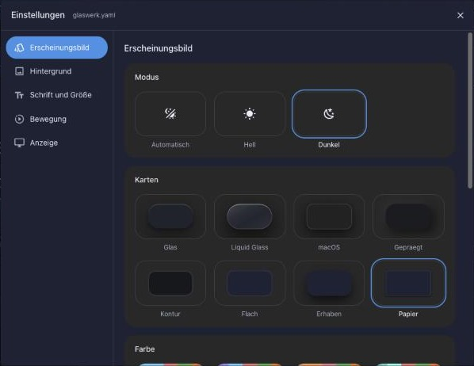
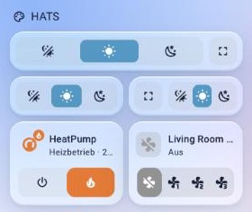
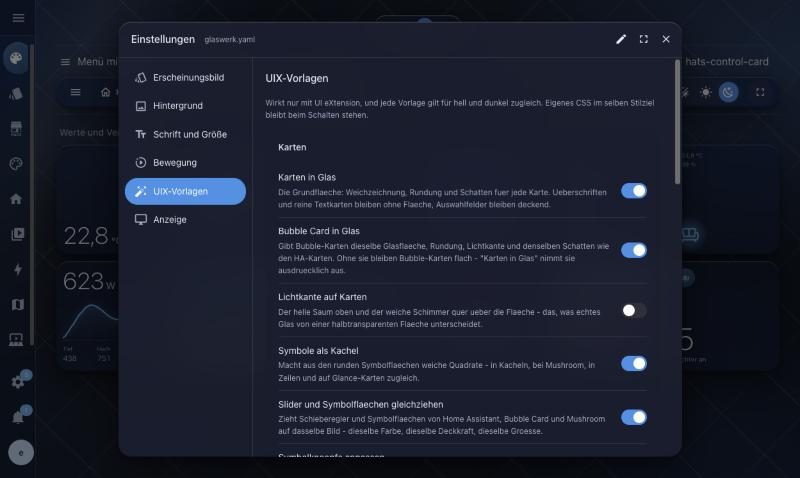
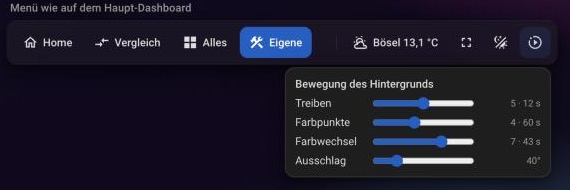
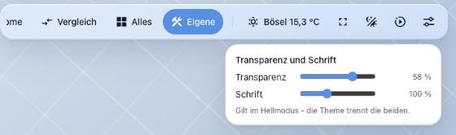
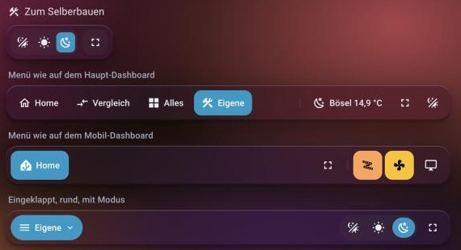
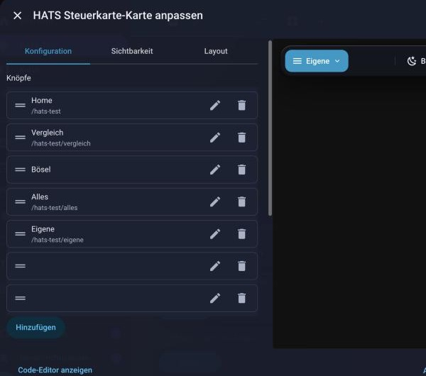
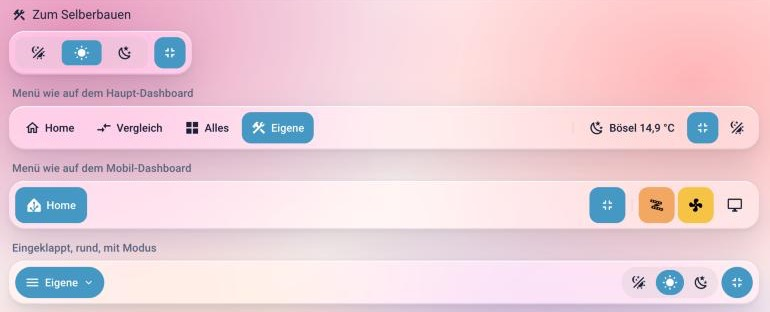
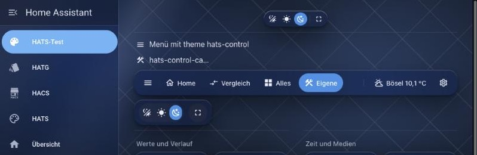
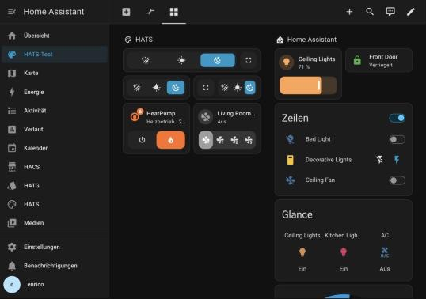
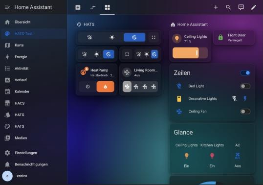
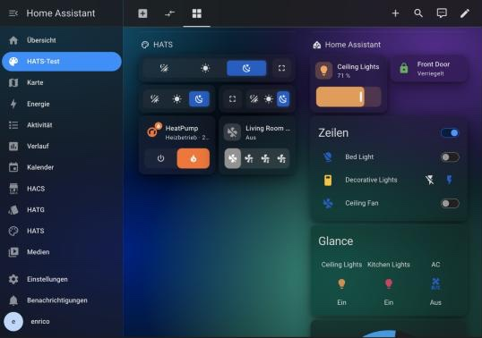
Im Panel unter UIX. Beim Überfahren blendet das Nachher-Bild weg und gibt das Vorher frei. Fahr mit der Maus darüber — genau wie im Panel.
custom_components/glaswerk/www/vorschau/
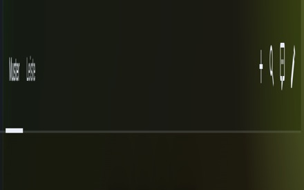
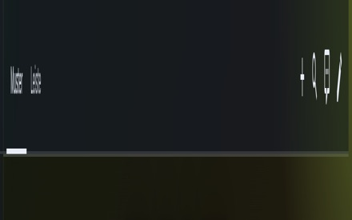
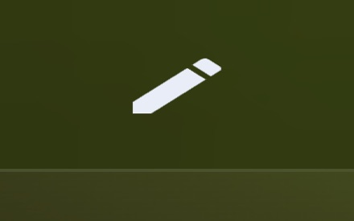
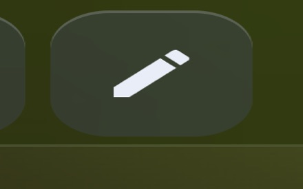
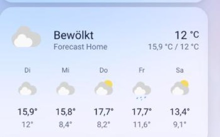
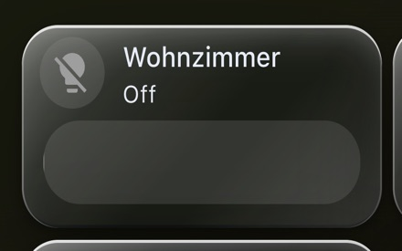
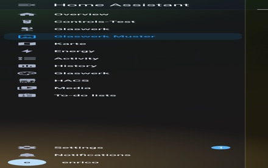
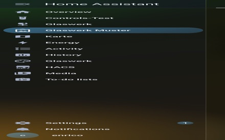
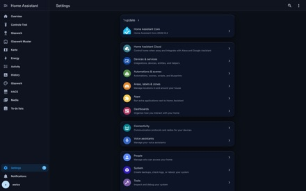
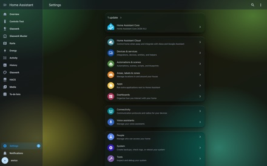
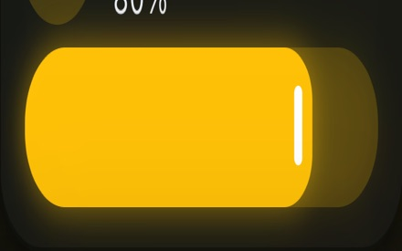
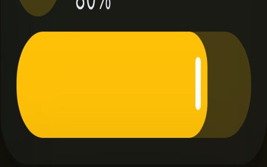
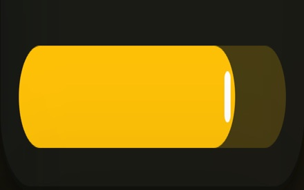
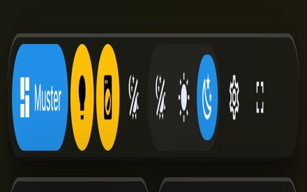
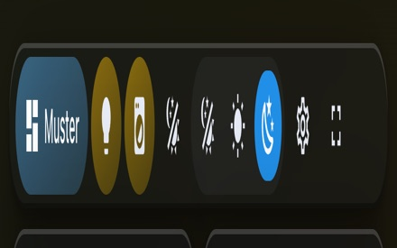
Im Panel steht dort „noch kein Bild“. Jede Zeile trägt den gemessenen Grund — kein Bild ist besser als eines, auf dem man nichts erkennt.
glas-bubble
sync-bedienelemente
glas-karten
abschnitte-trennen
glas-toast
glas-badges
glas-symbolkachel
glas-knoepfe
glas-nur-weichzeichnung
glas-more-info
glas-kopfleiste-einstellungen
Aus videos/glaswerk-promo/. Der jüngste Render ist der aktuelle Stand.
videos/glaswerk-promo/
glaswerk-promo_2026-10-15_21-17-52.mp4
glaswerk-promo_2026-10-15_20-55-05.mp4
glaswerk-promo_2026-10-15_20-53-00.mp4
glaswerk-promo_2026-10-15_20-40-05.mp4
glaswerk-promo_2026-10-15_20-38-08.mp4
glaswerk-promo_2026-10-15_20-22-56.mp4
glaswerk-promo_2026-10-15_19-44-08.mp4
Schau-Dashboard. Die vorhandene Musterseite (/glaswerk-muster) ist auf den Nachweis der Vorlagen gebaut, nicht aufs Vorzeigen — sie zeigt vier Lampen, vier Regler und eine Markdown-Karte nebeneinander. Für das README braucht es eine Ansicht, die aussieht wie bei einem echten Nutzer.
/glaswerk-muster
Bar und Styler zusammen. Beide gehören in ein Repository: Die Bar liegt ohnehin in custom_components/glaswerk/www/ und wird von karte.py selbst in Home Assistants Ressourcenliste eingetragen.
custom_components/glaswerk/www/
karte.py
Die Karten bleiben unerwähnt. Sie dürfen im Video zu sehen sein, stehen aber in keinem Text, keinem Repository-Namen und keinem HACS-Eintrag.
Hell/Dunkel im README geht über <picture> mit prefers-color-scheme — am 17.10.2026 an GitHubs Markdown-API geprüft. Ein Hover-Wechsel geht dort nicht: onmouseover wird entfernt, eigenes CSS escaped. Im Panel dagegen funktioniert der Hover (siehe Abschnitt 2).
<picture>
prefers-color-scheme
onmouseover